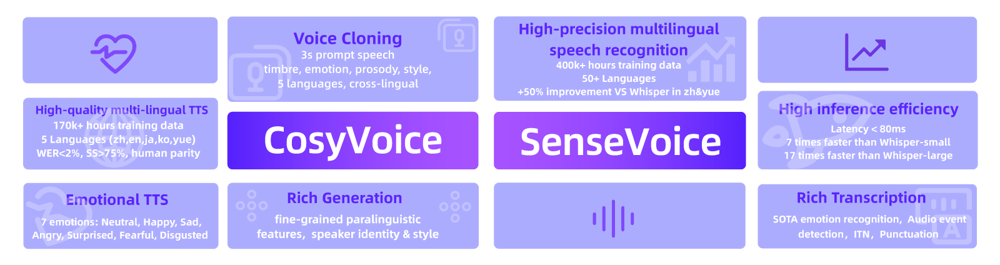
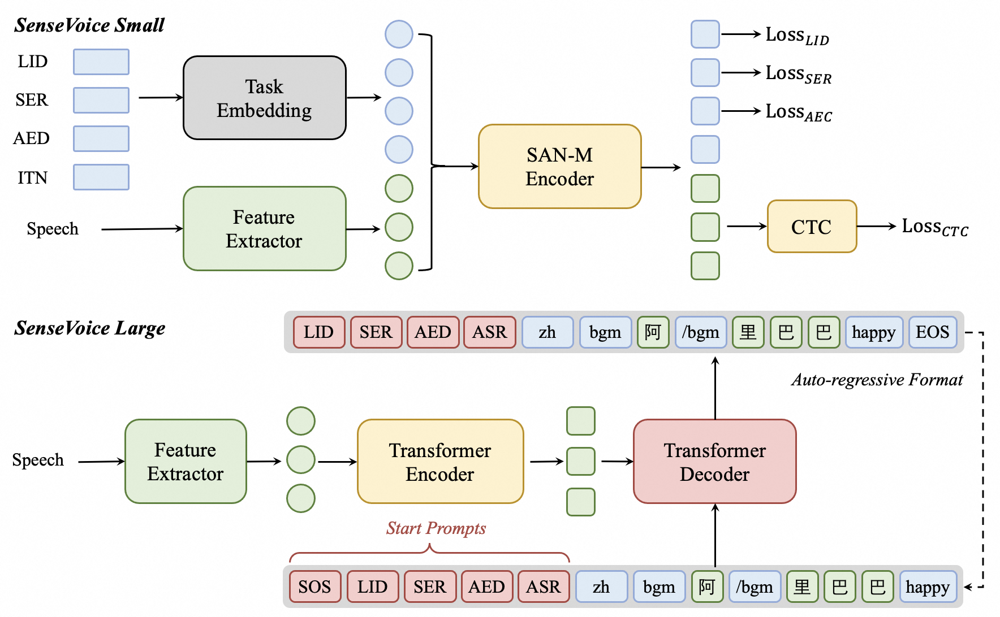
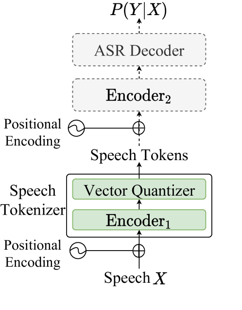
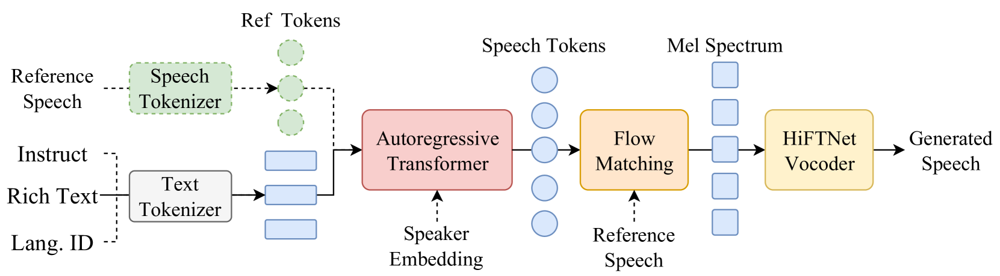
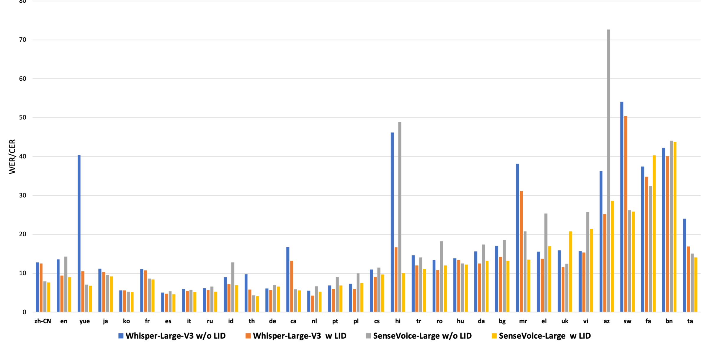

FunAudioLLM: Voice Understanding and Generation Foundation Models for Natural Interaction Between Humans and LLMs
随着 GPT-4o、Gemini-1.5 等多模态大模型的兴起，人与机器之间的语音交互正成为 AI 落地的关键场景。然而，构建自然流畅的语音交互系统需要同时解决语音理解（识别、情感检测、音频事件检测）和语音生成（多语言、多说话人、可控风格）两大难题，现有系统往往只侧重一方。
FunAudioLLM 的动机正是填补这一空白：通过SenseVoice（语音理解）和CosyVoice（语音生成）两个基础模型，结合 LLM 实现端到端的自然语音交互。SenseVoice 提供超低延迟的多语言 ASR、情感识别和音频事件检测；CosyVoice 提供零样本语音克隆、跨语言声音复制和指令可控的语音生成。两个模型均已开源（ModelScope + HuggingFace），训练/推理/微调代码在 GitHub 公开。

SenseVoice 是一个多功能语音基础模型，同时支持自动语音识别（ASR）、语言识别（LID）、语音情感识别（SER）和音频事件检测/分类（AED/AEC）。论文提供两个规模版本：

SenseVoice-Small 的多任务机制：输入语音经 80 维 log-mel 特征提取后下采样 6 倍，4 个特殊 token 嵌入 prepend 到特征序列前：
编码器使用记忆增强自注意力网络（SAN-M），输出经线性层 + Softmax 映射到词表 $V'$（包含 ASR token 和各任务 token）。ASR 用 CTC loss 优化，LID/SER/AEC 用交叉熵 loss 优化。
SenseVoice-Large采用类似 Whisper 的架构，通过解码器输入 token 序列指定任务，优势在于转录精度和语言覆盖范围。
CosyVoice 的语音生成需要将语音信号转化为离散 token，供自回归语言模型预测。论文对比了三类分词器：残差量化型（SoundStream/EnCodec/FunCodec）、多组量化型（HifiCodec）和语义型（HuBERT）。这些无监督/自监督分词器与语义内容的关联较弱，导致合成不稳定且需要大量清洁数据。

论文提出监督式语义分词器 $\mathcal{S}^3$，以预训练 SenseVoice-Large 编码器前 6 层为基础，在其后插入向量量化器：
由于监督训练，$\mathcal{S}^3$ 对数据噪声鲁棒，减少了对清洁数据的依赖，可使用更广泛的数据进行后续模型训练。在 Common Voice zh-CN 测试中，$\mathcal{S}^3$ token 的识别性能甚至超过 Whisper-Large-V3（相对错误率降低 4.14%）。
CosyVoice 是基于 $\mathcal{S}^3$ token 的语音生成模型族，支持中/英/日/粤/韩 5 种语言，发布三个 300M 参数的开源模型：

系统架构包含三阶段：
零样本上下文学习：对于同语言场景，将提示语音的 text + token 与输入文本合并为统一序列，提示语音 token 视为已生成；对于跨语言场景，省略提示语音的文本和 token，防止原始语言的韵律特征干扰目标语言。生成后的 speech token 与提示 token 拼接，作为流匹配模型的条件输入，同时加入说话人嵌入和提示语音的 mel 频谱增强音色和环境一致性。
指令微调：CosyVoice-instruct 在 CosyVoice-base 上用指令数据微调，支持三类可控指令：说话人身份描述（如"一位神秘优雅的舞者"）、说话风格描述（如"高音调快速说话的快乐女孩"）、细粒度副语言标记（如 `[laughter]`、`[breath]`、`强调`）。微调时移除 LM 中的说话人嵌入，使模型完全依赖指令文本控制输出。
SenseVoice 训练数据：SenseVoice-Small 使用约 300,000 小时音频（覆盖中/粤/英/日/韩 5 种语言），SenseVoice-Large 额外加入 100,000 小时多语言数据。AED 伪标签约 1.5 亿条，SER 伪标签约 3,000 万条。
CosyVoice 训练数据：总计约 170,000 小时（中 130k + 英 30k + 粤 5k + 日 4.6k + 韩 2.2k）。数据经语音检测、SNR 估计、说话人分离、信号分离等处理，用 SenseVoice-Large 和 Paraformer 生成伪文本标签，再经 force-alignment 模型精炼。
指令微调数据：说话人身份 101 小时、说话风格 407 小时、细粒度副语言 48 小时。
SenseVoice 在几乎所有中文/粤语基准上大幅超越 Whisper 对应版本。在 AISHELL-1 上，SenseVoice-L CER 2.09%（Whisper-L 5.14%）；在 Common Voice 粤语上，SenseVoice-S CER 7.09%（Whisper-L 10.41%）。LibriSpeech 上 Whisper-L 略优（clean: 1.82% vs 2.57%），但差距不大。

推理效率：SenseVoice-S RTF 0.007，10s 音频延迟仅 70ms——远快于 Whisper-S（518ms）和 Whisper-L-V3（1281ms），是所有模型中最快的。
SenseVoice 在 7 个 SER 基准上无需目标域微调即取得优异表现。SenseVoice-L 在 CASIA WA 96.0%、CREMA-D WA 90.4%、ESD WA 93.2%、IEMOCAP WA 75.3% 等指标上全面领先 EmoBox、Emo-Superb、MerBench 等基线。SenseVoice-S 也优于大多数开源 SER 模型（XLSR-SER、Qwen-Audio、SALMONN）。
SenseVoice 在 ESC-50、婴儿哭声检测、Coswara 咳嗽检测等任务上的 F1 与 BEATs 和 PANNs 相当或略低，但有一个有趣发现：SenseVoice 和 Qwen-Audio 的准确率远高于召回率，对交互场景更友好。这是因为 SenseVoice 用 ASR + AED 伪标签训练而非 AED 专用数据。
CosyVoice 在 LibriTTS test-clean（英文）和 AISHELL-3 test（中文）上达到人类水平的语音生成质量：
CosyVoice-instruct 在 6 种情感指令控制上的准确率显著优于 CosyVoice-base 和无指令的 CosyVoice-instruct。最突出的是：Sad 从 0.45 提升至 0.98，Disgusted 从 0.46 提升至 0.93，Angry 从 0.59 提升至 0.83。
仅用 CosyVoice 合成数据训练 ASR 模型即可达到与原始 LibriSpeech 训练相当的效果。合成数据 + 原始数据混合训练后 WER 显著降低（test_clean: 2.79 → 2.56 → 2.04）。更有趣的是，基于 MLS 文本的合成数据比基于 LS 文本的合成数据效果更好，说明文本多样性比语音时长本身更关键。
FunAudioLLM 通过 SenseVoice + LLM + CosyVoice 的组合实现四大应用：
论文承认以下局限：
值得关注的隐性局限：
FunAudioLLM 是一篇系统性强、工程完整度高的技术报告。其核心价值在于语音理解+生成+LLM 的全链路设计——SenseVoice 的非自回归架构在速度上碾压 Whisper，$\mathcal{S}^3$ 分词器的监督设计思路简洁有效，CosyVoice 的零样本克隆和指令控制在开源 TTS 中覆盖面最广。
从方法角度看，$\mathcal{S}^3$ 分词器是本报告最有启发性的设计。传统无监督分词器（EnCodec/HuBERT）与语义关联弱，而 $\mathcal{S}^3$ 直接利用 ASR 模型的编码器做监督量化，让 token 自然携带语义信息。单码本 + 4096 词表的简洁设计也降低了 LM 的学习难度。
SenseVoice-Small 的推理速度（70ms / RTF 0.007）是实际部署的杀手级优势。非自回归 + 多任务 token 嵌入的设计使得一个模型同时胜任 ASR/SER/AEC/LID，在交互场景中减少模型数量和推理开销。
CosyVoice 在开源 TTS 中功能最全（零样本 + 跨语言 + 指令可控），300M 参数达到人类水平语音生成质量，但规模限制了更复杂场景的表现。未与 LLM 端到端训练也是架构层面的根本局限。
总体而言，FunAudioLLM 是阿里巴巴通义语音团队的一次系统性展示，为语音理解+生成+LLM 融合提供了清晰的技术路径和完整的开源实现，对社区有较高参考价值。